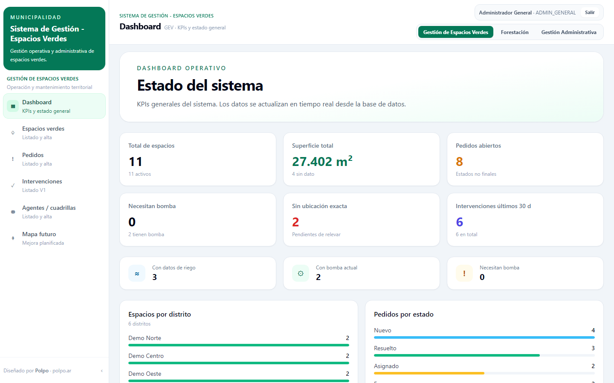

La información existía, pero estaba repartida alrededor de las personas.
El área necesitaba seguir espacios públicos, pedidos, asignaciones, intervenciones y trámites. Costaba responder preguntas simples: qué está pendiente, quién lo tiene y qué pasó antes.

Primero había que decidir qué era un pedido, qué estados podía tener y cómo se relacionaba con el trabajo realizado.
El espacio público funciona como referencia estable; los pedidos recorren estados explícitos y las intervenciones quedan vinculadas al trabajo realizado. El modelo mantiene el lenguaje cotidiano del área.

El objetivo no era tener otra lista. Era poder reconstruir una historia.
Cada pedido conserva contexto, prioridad, origen, estado, asignación e intervenciones. Los cambios agregan información sin borrar lo anterior.

No todo el trabajo termina en una cuadrilla.
El mismo entorno también sigue documentación y trámites con estado visible, responsable e historial. El alcance es concreto: ordenar el flujo interno que necesita seguimiento cotidiano.

Del relevamiento operativo a un MVP full-stack.
Definí el modelo de datos, API y arquitectura; después implementé backend y frontend e integré datos heredados. El código se mantiene privado por su contexto operativo real.
Para esta página preparé un entorno separado y un dataset 100% ficticio. El estado documentado es MVP funcional, con typecheck y build verificados.
Una herramienta para registrar el trabajo y reconstruir después qué pasó, quién lo tenía y cómo avanzó.
Volver a los casos